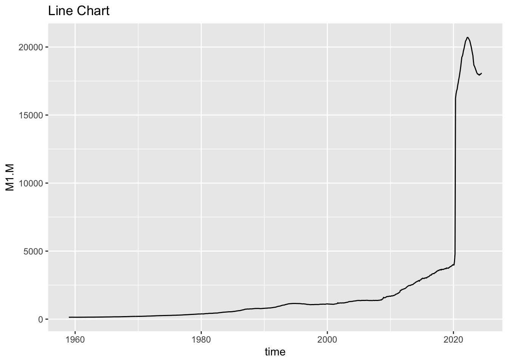
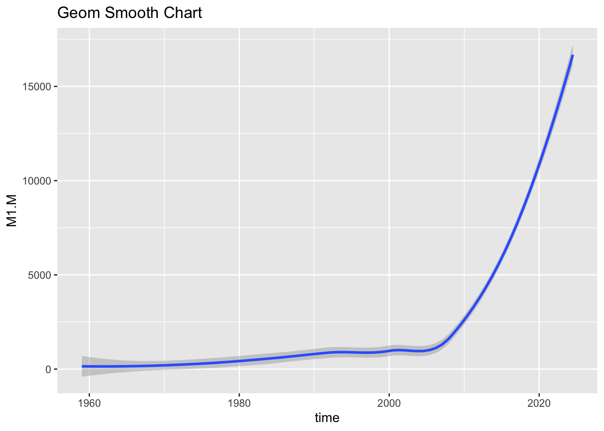
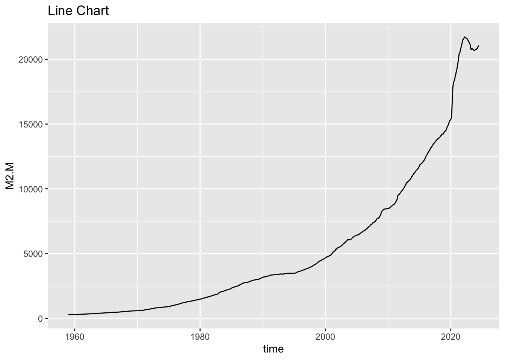
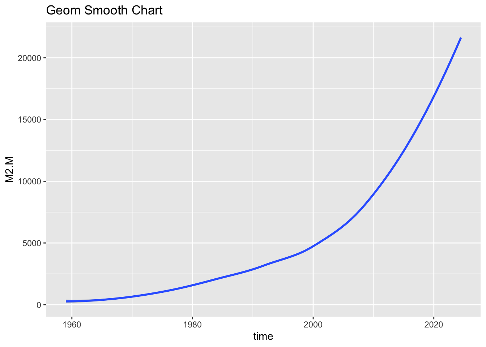

| Series | Description |
|---|---|
| M1_N.M | M1; Not seasonally adjusted |
| M2_N.M | M2; Not seasonally adjusted |
| MCU_N.M | Currency; Not seasonally adjusted |
| MDD_N.M | Demand deposits; Not seasonally adjusted |
| MDL_N.M | Other liquid deposits - Total; Not seasonally adjusted |
| MDTS_N.M | Small-denomination time deposits - Total; Not seasonally adjusted |
| MMFGB_N.M | Retail money market funds; Not seasonally adjusted |
| MIKD_N.M | IRA and Keogh accounts at depository institutions; Not seasonally adjusted. Last 4 obs are estimates. |
| MIKM_N.M | IRA and Keogh accounts at money market funds; Not seasonally adjusted. Last 4 obs are estimates. |
| MIK_N.M | IRA and Keogh accounts - Total; Not seasonally adjusted. Last 4 obs are estimates. |
| M1.M | M1; Seasonally adjusted |
| M2.M | M2; Seasonally adjusted |
| MCU.M | Currency; Seasonally adjusted |
| MDD.M | Demand deposits; Seasonally adjusted |
| MDL.M | Other liquid deposits - Total; Seasonally adjusted |
| MDTS.M | Small-denomination time deposits - Total; Seasonally adjusted |
| MMFGB.M | Retail money market funds; Seasonally adjusted |
| RESMOC14A_N.M | Monetary base; currency in circulation; not seasonally adjusted |
| RESMOB14A_N.M | Monetary base; reserve balances; not seasonally adjusted |
| RESMO14A_N.M | Monetary base; total; not seasonally adjusted |
| RESTR14A_N.M | Reserves of depository institutions, total; not seasonally adjusted |
| RESBR14A_N.M | Total borrowings from the Federal Reserve; not seasonally adjusted |
| RESNB14A_N.M | Reserves of depository institutions, nonborrowed; not seasonally adjusted |
| MDO_N.M | Other checkable deposits - Total; Not seasonally adjusted; *Discontinued after Apr 2020 |
| MDU_N.M | Savings deposits - Total; Not seasonally adjusted; *Discontinued after Apr 2020 |
| MTC_N.M | Travelers checks; Not seasonally adjusted; *Discontinued after Dec 2018 |
| MDO.M | Other checkable deposits - Total; Seasonally adjusted; *Discontinued after Apr 2020 |
| MDU.M | Savings deposits - Total; Seasonally adjusted; *Discontinued after Apr 2020 |
| MTC.M | Travelers Checks; Seasonally adjusted; *Discontinued after Dec 2018 |
M1 & M2 Money Supply
The M1 and M2 money supply measures are tools used by economists and central banks to gauge the amount of money circulating in an economy. They help in understanding liquidity and economic activity.
M1 Money Supply
M1 is the most liquid measure of the money supply, including:
- Currency in Circulation: This is the physical cash (coins and paper money) held by the public.
- Demand Deposits: Checking accounts and other deposits that can be readily accessed and used for transactions.
- Other Checkable Deposits: Includes certain types of accounts that allow for immediate access and transactions, like negotiable order of withdrawal (NOW) accounts.
M1 represents the money that is readily available for spending and is considered the most liquid form of money.
M2 Money Supply
M2 includes all of M1 plus additional forms of money that are less liquid but still can be converted into cash or checking deposits relatively easily. It encompasses:
- Savings Deposits: Accounts where money earns interest but is less accessible than demand deposits.
- Time Deposits: Certificates of deposit (CDs) and other accounts with fixed terms where money is locked in for a period but can be converted to cash or checking with some notice or penalty.
- Money Market Deposit Accounts (MMDAs): These are interest-bearing accounts offered by banks and credit unions that typically require a higher minimum balance.
M2 provides a broader view of the money supply by including assets that are not as immediately accessible as those in M1 but can still be relatively easily turned into cash or checking deposits.
Key Differences
- Liquidity: M1 is the narrowest and most liquid measure, while M2 includes everything in M1 plus less liquid assets.
- Scope: M2 gives a broader picture of the money supply by including savings accounts, time deposits, and other near-money assets.
By monitoring these measures, central banks and policymakers can gauge economic conditions, influence monetary policy, and address issues like inflation or deflation.
H.6 Statistical Release
Federal Reserve publishes a host of economic data.
Among them is the Money Stock Measures designated as H.6.
Data Download, link
There are 30 unique measurements.
In this analysis, only M1 and M2 will be analyzed.
M1 Seasonally Adjusted


M2 Seasonally Adjusted


geom_smooth method
Smoothing Method: The function uses a smoothing method to fit a line to the data. By default, it uses loess (Locally Weighted Scatterplot Smoothing) for small datasets and gam (Generalized Additive Models) for larger datasets. You can also specify other methods like linear regression (method = “lm”)
M1 Supply and Inflation
The M1 money supply can have a significant impact on inflation, which is the rate at which the general level of prices for goods and services rises, eroding purchasing power. The relationship between M1 (a narrow measure of the money supply) and inflation is rooted in basic economic principles, particularly the quantity theory of money and demand-pull inflation.
1. Quantity Theory of Money
- Basic Concept: The quantity theory of money is summarized by the equation ( MV = PQ ), where:
- ( M ) is the money supply (M1 in this case).
- ( V ) is the velocity of money, or how frequently money changes hands.
- ( P ) is the price level.
- ( Q ) is the real output or quantity of goods and services produced in the economy.
- Implication: If the money supply (M) increases rapidly while the velocity of money (V) and the output (Q) remain relatively stable, the price level (P) tends to increase, leading to inflation.
2. Demand-Pull Inflation
- Mechanism: An increase in M1 typically means more cash and liquid assets are available for spending. When people and businesses have more money in their checking accounts, they are likely to spend more. This increase in aggregate demand (the total demand for goods and services in an economy) can lead to higher prices if the supply of goods and services doesn’t keep up.
- Scenario: For instance, if the economy is at or near full capacity, a sudden increase in M1 can push demand beyond what the economy can produce. As a result, businesses may raise prices, leading to demand-pull inflation.
3. Central Bank Policies and Inflation
- Monetary Policy: Central banks, like the Federal Reserve in the U.S., monitor the M1 money supply closely because changes in M1 can signal potential inflationary pressures. If the central bank observes that M1 is growing too quickly, it might take actions to curb inflation, such as raising interest rates or reducing the money supply through open market operations.
- Controlled Increase: On the other hand, a moderate and controlled increase in M1 can support economic growth without causing excessive inflation, especially if the increase in money supply matches the growth in the economy’s productive capacity.
4. Current Economic Context
- Low Velocity of Money: In certain periods, even a significant increase in M1 might not lead to inflation if the velocity of money is low—meaning that people or businesses are holding onto cash rather than spending it. This was observed during the COVID-19 pandemic when central banks increased the money supply, but inflation remained low for a period due to reduced spending and uncertainty.
Summary
An increase in the M1 money supply can lead to inflation, particularly when it outpaces the economy’s ability to produce goods and services. This relationship is central to how central banks manage monetary policy, balancing the need for economic growth with the risk of inflation. However, the impact of M1 on inflation can be moderated by factors like the velocity of money and economic capacity.